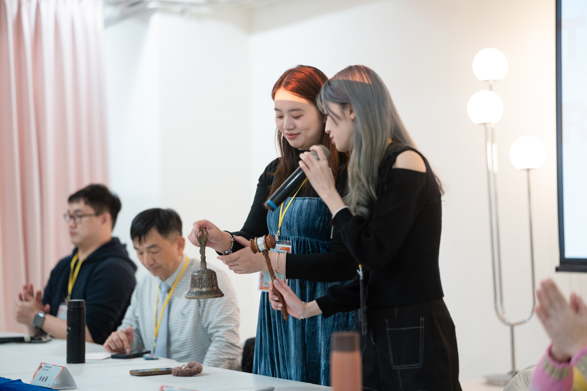

2025-26 年度會長
詠文・婉華
首圖放兩位會長一起敲鐘的畫面，當作這一年的開場。
會長介紹
這頁收錄 北區分會長洪婉華 Hannah 與 新北區分會長鄭詠文 Victoria 的正式資料與年度回顧，內容以交接典禮手冊為主。
這裡只放會長資料，月份活動請到活動頁。

首圖放兩位會長一起敲鐘的畫面，當作這一年的開場。
把聯誼會帶成一個能一起做事、彼此支持的團隊。
從交接到迎新，把經驗和關係慢慢接下去。
用不同主題例會和公益活動，讓大家更有參與感。
會長資料
這頁依交接典禮手冊收錄兩位會長的正式資料與年度回顧，也能對照這一年的活動分工。
允許一切的發生，遇到問題，解決問題。
手冊裡回顧了她這一年的籌備與執行，也感謝扶輪前輩、幹部和獎學生夥伴一路相挺。
聯誼會不只是交流的平台，更是探索自我、實現夢想的起點。
手冊裡回顧了交接典禮、九份畢旅、幹部訓練到多場例會，也希望每位夥伴都能自在參與聯誼會。
資料來源
這頁以交接典禮手冊的正式名稱和背景資料為主；如果要看每個月份的活動時間、照片和附件，請前往 活動頁。